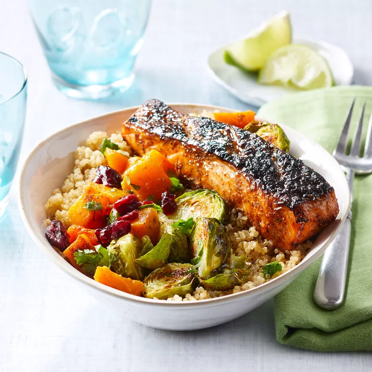

Home
Jerk-Spiced Salmon and Quinoa Bowl w/Mango Vinaigrette

Chef Millie Peartree has been feeding the community in the Bronx, where she grew up,
as a private chef, caterer and restaurant owner of Millie Peartree's Fish Fry & Soul Food
for more than a decade. Her healthy-eating philosophy is all about making simple but
flavorful protein-packed meals. Mango juice in the vinaigrette balances the spiced salmon
and roasted vegetables on these grain bowls.
Sourced from EatingWell
Yield = 6 servings
Ingredients
- 1 1/2 lbs skin-on salmon fillet
- 8 tbsp extra-virgin olive oil, divided
- 2 tbsp + 1 tsp jerk season, divided
- 1 tsp paprika
- 4 tsp lime juice, divided (plus lime wedges for serving)
- 1 lb Brussel sprouts, trimmed and halved
- 3/4 teaspoon kosher salt, divided
- 1/4 teaspoon ground pepper, divided
- 1 medium butternut squash, peeled and cut in 1/2" cubes
- 1 large shallot
- 2 cups low-sodium vegetable broth (plus more if needed)
- 1 cup quinoa
- 1/4 cup mango juice or nectar
- 2 tbsp chopped fresh cilantro
- 3/4 cup dried cranberries, coarsely chopped
Steps
- Place salmon on cutting board, skin-side up, and cut into 6 portions. Using a sharp knife, make 3 1/8" deep cuts through skin of each portion.
- Whisk 1 tbsp oil, 2 tbsp jerk seasoning, paprika, and 1 tsp lime juice in medium bowl.
- Rub mixture on both sides of the salmon. Cover and refrigerate for about 20 mins.
- Position racks in upper and lower thirds of oven; preheat to 425°F.
- Toss Brussel sprouts, 1 tbsp oil, 1/4 teaspoon salt, and 1/8 tsp pepper on rimmed baking sheet.
- Toss squash, 1 tbsp oil, 1/4 tsp salt, and remaining jerk seasoning on another rimmed baking sheet.
- Roast vegetables until lightly browned, stirring and rotating pans between racks halfway through for about 20 mins.
- Meanwhile, heat 1 tbsp oil in medium saucepan over medium-high heat.
- Add shallot and cook, stirring until softened for about 2 mins.
- Add broth and bring to a boil. Add quinoa, cover and reduce heat to a low simmer.
- Cook until most of the liquid has been absorbed for 15-20 mins. Then remove from heat.
- When the vegetables are out of the oven, turn broiler to high and line a baking sheet with foil.
- Place the salmon skin-side up, on the prepared baking sheet. Broil until the skin is crispy and the flesh is opaque for 8-10 mins.
- Whisk mango juice/nectar, cilantro, remaining oil, 3 tsp lime juice, 1/4 tsp salt, and 1/8 tsp pepper in a small bowl.
- Serve quinoa, vegetables, and salmon topped with dressing, dried cranberries, and lime wedges.